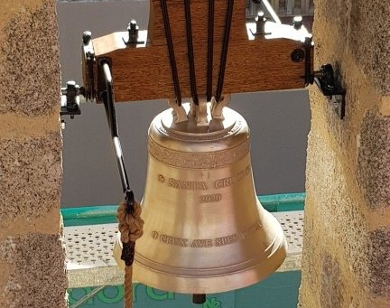
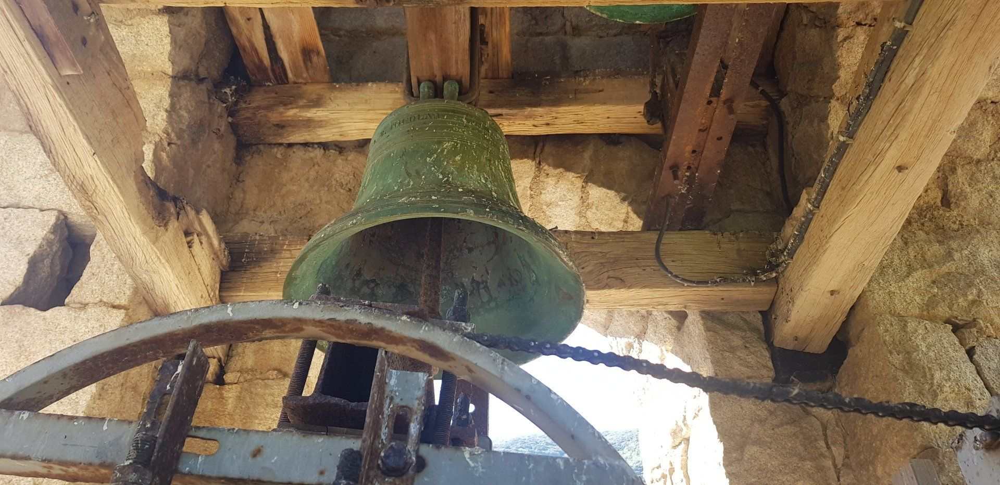
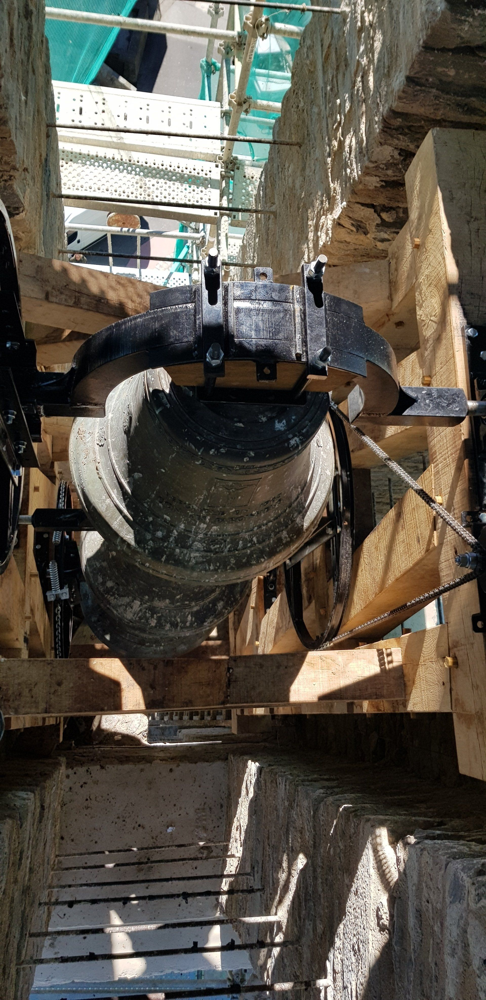

Un artisan campanaire au service du tintement des villages de l'Île de Beauté.
Créée en 1996, notre entreprise familiale se démarque par ses années d'expertise ainsi que par sa passion et son amour pour le patrimoine corse. Monuments religieux, édifices et monuments historiques doivent garder tout leur charme et leur histoire.
Nous avons à cœur de conserver notre patrimoine et de faire tout pour que chaque commune puisse le faire. Expérimentés, nous savons nous adapter en fonction de chaque besoin tout en respectant les valeurs spécifiques de chaque paroisse.
Nous travaillons aux côtés de maisons reconnues — Bodet, Mamias, Cornille Havard, Fulgor Service — dans le respect des normes UTE C 18-510 et sous garantie décennale.
« Confiez-nous vos projets, votre artisan campanaire saura vous satisfaire et répondre à toutes vos demandes tout en respectant notre patrimoine, qui nous est cher. »
— U Campanile · Piève · Haute-Corse



